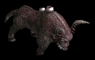

凍りついた城
| 制限Lv | 240〜1000 |
|---|---|
| 秘密ダンジョンの入口 | 地下軍団 集結地（0.0） |
| 関連 | メインクエスト4-4-1 |
| ミニマップの表示条件 | マップ製作者Lv8 |
| フィールド属性低下 | 水抵抗-50％ |
| 罠 | なし |
地下軍団 集結地の入口 ナラダ平原の沼地帯 / ノーススワンプ
 |
● | … 移動ポータル |
○ … 地下軍団 集結地の入口（4.226）（76.25）（274.212）（276.1）。どこから入っても同じ。
秘密ダンジョンの入口 地下軍団 集結地
 |
○ ● П ▲ |
… 初期位置 … 秘密の入口 … 扉 … 外郭警備隊長 |
秘密ダンジョン 凍りついた城

| ○ ○ ○ ▲ ▲ |
… 初期位置 … 柱 … 氷 … ドラゴンナイト … アクアドラゴン |
<手順>
地下軍団 集結地
▲外郭警備隊長（Lv220）Zinを倒す
扉が開く
凍りついた城
▲ドラゴンナイト（Lv210)Zinを倒す
○柱をクリック
アクアドラゴン登場ムービー
再度、柱をクリックしてワープ

▲アクアドラゴン（Lv245)を倒す
○氷をクリックしてクエスト更新

<補足>
地下軍団 集結地に入る時点で、パーティーメンバー1人以上が迷彩服を持っていないと入れない。
迷彩服は一度秘密ダンジョンに入るとクリア・失敗に関わらず消えてしまうので、再挑戦で行く場合は他の人から分けてもらう必要がある。
ギルド倉庫に予備としていくつか保管しておくとよい。
地下軍団 集結地は、リーダーがそのマップに不在（先に秘密に入ってしまった場合）になるとクエスト遂行パーティーとみなされず、他のメンバーはクエスト遂行者・お手伝いに関わらずモンスターのタゲを取ると迷彩服を奪われて外に飛ばされてしまう。
リーダーとポタ持ちは別の人にすること。
秘密ダンジョンの入口前で周りのモンスターを殲滅してから、まずポタ持ちが入り、他のメンバーが入り、最後にリーダーが入ること。
もし外に飛ばされてしまった場合は、予備の迷彩服を持ってきて、飛ばされたメンバーにリーダーを渡し、再度この順番で入り直す。ドラコリッチやティアメス秘密も同様。
秘密ダンジョンの制限時間は1時間30分。
アクアドラゴン登場ムービー中は行動不可なので、タゲを取った状態でムービーが始まってしまうと、攻撃されたままになってしまう。
周りのモンスターを一掃してから○柱をクリックすること。
アクアドラゴンのコンバージョンアイス（氷漬け）は、抵抗不可、アイテムの使用不可。
他のメンバーが氷を殴って破壊すれば脱出可能。
アクアドラゴンが透明になっている間は、物理ダメージを完全に無効化する。
○氷をクリックすると崩壊のカウント60秒が始まってしまうので、全員氷の近くに集まってからクリックすること。
氷漬け、ゴムバンド、死亡などの移動不能がよくあるため。

| 秘密ダンジョンの入口 地下軍団 集結地 | |||
|---|---|---|---|
| モンスター | 使用スキル | スキル詳細 | |
 |
外郭警備隊長 （ストーントルドZin） |
スペクトラルフィスト | 火+水+風+大地+物理ダメージ フリーズ |
| ワイルドスタンプ(M) | 物理ダメージ ノックバック |
||
| アンテイム | ペット魅了・即死 | ||
| RED STONEの情熱 | 火+水+風+大地+物理ダメージ 攻撃力・防御力・HP上昇 |
||
| 秘密ダンジョン 凍りついた城 | |||
| モンスター | 使用スキル | スキル詳細 | |
 |
ドラゴンナイト （ボーンキメラ3 Zin） |
フリーリジェネレーション | HP回復 |
| スタンアタック | 物理ダメージ スタン |
||
| インフェルノバイト | 火+物理ダメージ | ||
| デッドリーナイトメア(M) | 闇ダメージ 睡眠 |
||
| 死の視線 | 大地ダメージ 暗闇,睡眠,スタン,石化,混乱 |
||
 |
アクアドラゴン （アクアドラゴン） |
アイスブレス | 水ダメージ 水抵抗低下,コールド |
| スリップウィング | 睡眠 | ||
| ドラゴンロア | スタン | ||
| コンバージョンアイス | 氷漬け,行動不能 | ||
| アイシドフィーラ | 水ダメージ フリーズ,致命打,決定打 |
||
| フォグフォーム | HP回復 | ||
| アイシクル | 物理ダメージ ノックバック |
||
| 戦意喪失 | CP獲得無効 | ||
| ドラゴンアースクエイク | 透明,物理ダメージ無効 | ||
 |
ファミリア （ファミリアEx） |
ソードアタック | 物理ダメージ |
| シールドピアシング | 物理ダメージ | ||
 |
竜の騎士 （リザードトルーパEx） |
ソードアタック | 物理ダメージ |
| シールドピアシング | 物理ダメージ | ||
 |
竜の騎士団槍兵 （ナーガファイタEx） |
ソードアタック | 物理ダメージ |
| シールドピアシング | 物理ダメージ | ||
 |
竜の騎士団先鋒隊 （エルフ巡察者Ex） |
ソードアタック | 物理ダメージ |
| ピアシングアロー(M) | 物理ダメージ | ||
 |
槍兵隊長 （魔女2 Zin） |
ソードアタック | 物理ダメージ |
| ブラッドエキスパンド | 攻撃力低下,防御力上昇,HP回復 | ||
| 悪口(M) | 全属性抵抗低下 | ||
| ライフドレインII | 物理ダメージ HP吸収 |
||
 |
騎竜兵隊長 （ダークエルフ王Ex） |
ソードアタック | 物理ダメージ |
| ヒーリング | HP回復 | ||
 |
竜の騎士団隊長 （エルフガーディア Zin） |
ピンシャーアタック | 物理ダメージ |
| スリーピーホール | 物理ダメージ 睡眠 |
||
| フリーリジェネレーション | HP回復 | ||
 |
特攻兵 （シーク天使1 Zin） |
ソードアタック | 物理ダメージ |
| ヒーリング | HP回復 | ||
| フォースドレイン | 物理ダメージ レベル低下 |
||
| ホーリーサークル(M) | 光ダメージ | ||
|
特攻隊長 （ストーンラバーZin） |
スペクトラルフィスト | 火+水+風+大地+物理ダメージ フリーズ |
| ワイルドスタンプ(M) | 物理ダメージ ノックバック |
||
| アンテイム | ペット魅了・即死 | ||
| RED STONEの情熱 | 火+水+風+大地+物理ダメージ 攻撃力・防御力・HP上昇 |
||
 |
急襲兵 （剣闘士1 Zin） |
ブラインドアタック(M) | 物理ダメージ 暗闇 |
| 暗殺(M) | 物理ダメージ 即死,致命打,決定打 |
||
| スペクトラルフィスト | 火+水+風+大地+物理ダメージ フリーズ |
||
| ヘルプリズン(M) | 移動不能 | ||
 |
急襲隊長 （剣闘士2 Zin） |
嫌み(M) | 命中率・回避率低下 |
| スペクトラルフィスト | 火+水+風+大地+物理ダメージ フリーズ |
||
| ライフドレインII | 物理ダメージ HP吸収 |
||
 |
重装兵 （邪臣1 Zin） |
ハルバードストライク | 風+物理ダメージ |
| ワインディングサイズ | 物理ダメージ スタン |
||
| 悪口(M) | 全属性抵抗低下 | ||
| ミラーカーズ(M)II | 反射闇ダメージ | ||
 |
重装隊長 （古代悪魔3 Zin） |
死の予言(M) | 物理ダメージ 応急処置 |
| ワインディングサイズ | 物理ダメージ スタン |
||
| ブライトフラッシュ | 光ダメージ | ||
| インクスプレー | 闇ダメージ | ||
| ディップソング | ダメージ反射 | ||
 |
占領区治安兵 （シーク守護者1 Zin） |
影隠れ(M) | ブラー スキルレベル・命中率・回避率上昇 |
| ワインディングサイズ | 物理ダメージ スタン |
||
| 悪口(M) | 全属性抵抗低下 | ||
 |
占領区治安隊長 （シーク天使2 Zin） |
ソードアタック | 物理ダメージ |
| ヒーリング | HP回復 | ||
| ディメンジョンアーマー | 異常・低下・呪い・全属性抵抗上昇 防御力上昇 |
||
| スパイダーウェブ(M) | 移動不能 | ||
| ホーリーサークル(M) | 光ダメージ | ||
 |
占領戦略部隊長 （シーク天使3 Zin） |
ソードアタック | 物理ダメージ |
| ヒーリング | HP回復 | ||
| ホーリーサークル(M) | 光ダメージ | ||
| ホーリークロス(M) | 光ダメージ HP回復 |
||
| フロストクェイクII | 水ダメージ コールド |
||
 |
魔術隊戦闘兵 （ダークプリーストEx） |
クラブアタック | 物理ダメージ |
| バインディングモルプ | 闇+物理ダメージ 移動速度・攻撃速度低下 |
||
|  | バッファロー （ダークバッファロ1 Zin） |
ピンシャーアタック | 物理ダメージ |
| ブラインドアタック(M) | 物理ダメージ 暗闇 |
||
| ワームバイト(M) | 闇ダメージ 移動不能 |
||
 |
デッドマジシャン （アンデッド魔法師2 Zin） |
ブラッドエキスパンド | 攻撃力低下,防御力上昇,HP回復 |
| ロックバウンディング(M) | 大地ダメージ スタン |
||
| ライフドレインII | 物理ダメージ HP吸収 |
||
 |
マウントウォリア （ビッグモンキー1 Zin） |
スタンアタック | 物理ダメージ スタン |
| 掴み投げ | 物理ダメージ ノックバック |
||